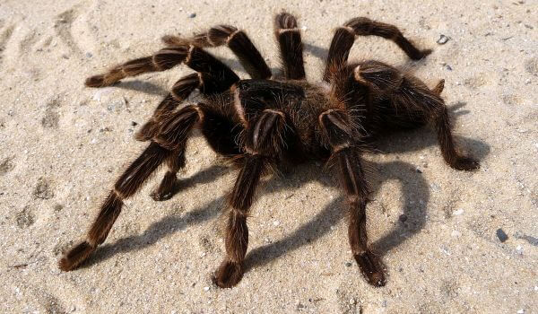
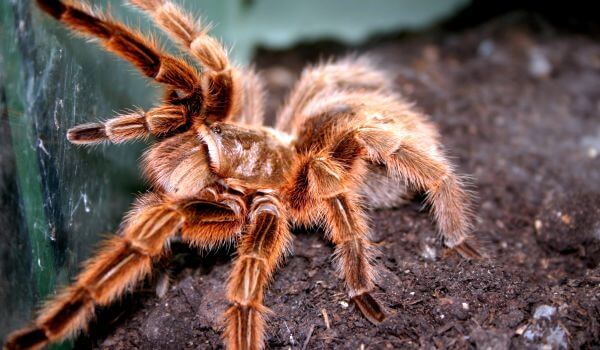
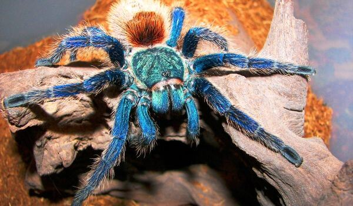
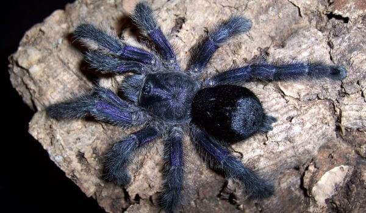
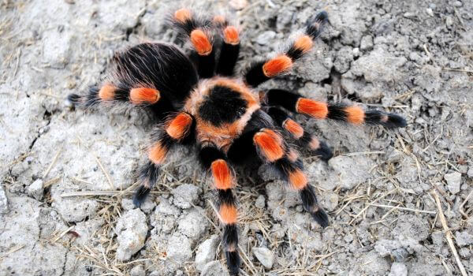
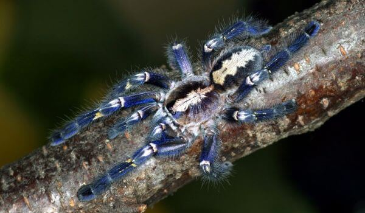
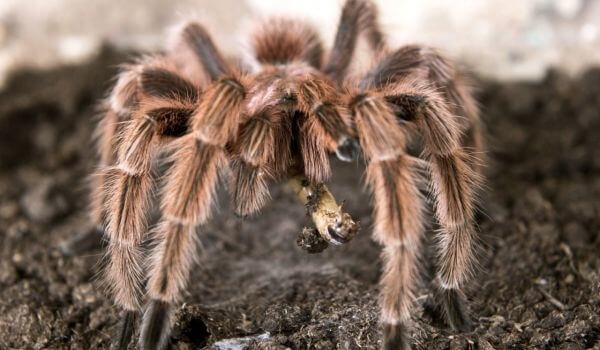
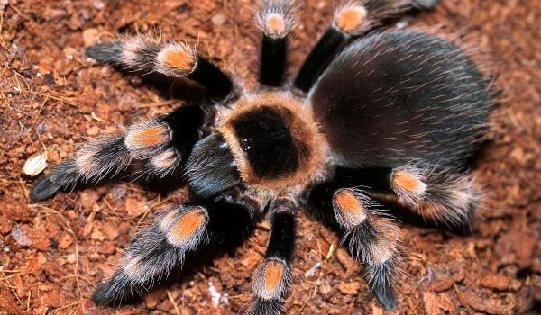

Данный паук относится к членистоногим насекомым, является представителем класса паукообразных, отряда пауков,
семейства
пауков – птицеедов. Название данного ядовитого паука пошло от картины немецкой художницы Марии
Сибиллы Мериан,
которая
изобразила паука, нападающим на птицу колибри. Она
сама являлась свидетельницей данного эпизода, который смогла
наблюдать в период пребывания на Суринаме.
Данных пауков относят к подотряду
примитивных
паукообразным. В различных источниках часто их причисляют к
тарантулам.
Однако это происходит из-за неправильного, не совсем корректного перевода их наименования. Многие ученые и
исследователи
считают целесообразным выделение пауков-птицеедов в отдельный класс насекомых, как например, скорпионов.
Впервые описание данного вида членистоногих появилось в 18 веке после того, как немецкая художница вернулась из
длительного путешествия по побережью Южной Америки, где в те времена мало кто бывал.
После того, как она стала
свидетельницей необычной сцены нападения паука на птичку небольшого размера, она перенесла ее на свой холст. По
приезду
на родину картина была представлена обществу. Однако данный эпизод подвергся жесткой критике со стороны
общественности,
так как никто не смог поверить в то, что насекомое может питаться мелкими беспозвоночными животными, либо
птицами.
Однако спустя всего полтора века этому явлению было получено достаточное количество доказательств и наименование
паук-птицеед очень прочно закрепилось за членистоногим. На сегодняшний день пауки довольно распространены на
разных
континентах. Они разделены на множество подвидов, которых исследователи насчитывают порядка тысячи.

Паук птицеед обладает довольно запоминающейся, яркой внешностью. У него длинные, покрытые жесткими, густыми
ворсинками
конечности. Они выполняют функцию органов осязания и обоняния.
Визуально создается впечатление, что членистоногие являются обладателями шести пар конечностей, однако если
хорошенько
присмотреться, станет ясно, что конечностей у паука всего четыре пары. Это лапки, одна пара которых приходится
на
хелицеры, которые используются для рытья нор, защиты, охоты и перемещения пойманной добычи, а также педипальпы,
которые
выполняют функцию органов осязания. Хелицеры, в которых имеются протоки ядовитых желез, направлены вперед.
Некоторые подвиды обладают довольно крупными размерами, достигая 27-30 сантиметров. В среднем длина тела одной
взрослой
особи составляет от 4 до 10-11 сантиметров, без учета длины конечностей. Средняя масса тела составляет 60-90
грамм.
Однако встречаются особи, масса которых достигает порядка 130-150 грамм.
Каждый из подвидов данного вида имеет яркий и очень специфический окрас. С каждой последующей линькой цвет
становится
более яркой и насыщенной.
Интересный факт: В период линьки не только цвет становится более ярким и
насыщенным, но и
увеличиваются размеры
тела.
Некоторые особи именно в момент линьки могут увеличиваться в три-четыре раза!
Иногда в процессе линьки пауку не удается освободить конечности. От природы они наделены способностью их
отбрасывать.
Однако уже спустя три-четыре линьки они снова восстанавливаются.
Туловище членистоногого состоит из двух сегментов: головогруди и брюшка, которые соединяются друг с другом
плотным
перешейком. Сегменты тела покрыты плотным экзоскелетом – хитином. Такой защитный слой оберегает членистоногих от
механических повреждений и способствует предотвращению излишней потери влаги. Это особенно важно для тех
насекомых,
которые обитают в регионах с жарким, засушливым климатом.
Головогрудь защищена цельным щитом, который называется карапасом. На передней его поверхности расположены четыре
пары
глаз. Органы пищеварительного тракта и репродуктивной системы находятся в брюшке. На конце брюшка расположены
придатки,
позволяющие плести паутинные нити.

Пауки-птицееды довольно распространены в природе и проживают практически на территории всего земного шара.
Исключением
является только территория Антарктиды. Несколько реже, чем в других регионах
пауки встречаются в Европе.
Географические регионы распространения членистоногих:
Регион обитания во многом определяется видом. Некоторые виды относятся к засухоустойчивым и
селятся в пустынях с
жарким,
знойным климатом. Другие предпочитают зоны тропических либо экваториальных лесов. В зависимости от среды
и типа
обитания, пауки подразделяются на несколько категорий: норные, древесные и земляные. Соответственно, они
проживают в
норах, на деревьях или кустарниках либо на поверхности земли.
Характерно, что на различных стадиях своего развития пауки могут менять образ и место жительства.
Личинки, которые на
данной стадии обитают в норах, по достижению периода полового созревания выходят из нор и большую часть времени
проводят
на поверхности земли. Многие птицеяды, которые предпочитают проживать в норах, выкапывают их самостоятельно и
укрепляют,
оплетая паутиной. В некоторых случаях могут занимать норы мелких грызунов, которые были съедены пауком. Пауки,
обитающие
на деревьях или кустарниках, из паутины могут сооружать специальные трубки.
В силу того, что пауки считаются малоподвижными членистоногими, основную часть своего времени
проводят в выбранных или
сделанных убежищах. Особи женского пола, которые плотно и основательно подкрепились, могут не покидать своих
укрытий на
протяжении нескольких месяцев.
Теперь Вы знаете где живет паук птицеед, давайте же теперь посмотрим, чем можно
кормить птицееда.

Насекомые довольно редко питаются мясом, однако они считаются хищниками и употребляют в пищу исключительно
животную
пищу. Особенности строения пищеварительного тракта требует легко усваиваемой, нежной пищи.
Что служит кормовой базой паукам – птицеедам:
- птицы;
- мелкие грызуны и беспозвоночные;
- насекомые;
- более мелкие членистоногие, в том числе пауки;
- рыбы;
- земноводные.
Органы пищеварения устроены таким образом, что они не могут справиться с
мясом птицы. Однако в
природе действительно
встречаются случаи нападения пауков на птиц небольшого размера. Основная часть рациона птицеедов – мелкие
насекомые –
тараканы, мотыли, мухи, членистоногие. Добычей могут стать и сородичи паукообразных.
Пауков птицеедов нельзя назвать активными насекомыми, поэтому чтобы поймать свою добычу, они чаще
всего поджидают свою
жертву в засаде. Благодаря сверхчувствительным волоскам они ощущают каждое движение потенциальной добычи. Также
они
способны определить размер и вид жертвы. Когда она подбирается максимально близко, паук молниеносно нападает,
впрыскивая
в нее яд.
В период, когда пауки слишком голодны, могут преследовать жертву, или аккуратно к ней
подкрадываться, пока не подберутся
на максимально близкое расстояние. Пауки, которые только что появились из яиц, не испытывают голода и
потребности в
питании.

Паук птицеед ведет одиночный образ жизни. Им свойственно большую часть времени проводить в выбранных ими
укрытиях. Если
пауки сыты, они могут по несколько месяцев не покидать своего убежища. Данным видам пауков характерно вести
уединенный,
малоподвижный образ жизни. В случае необходимости пауки покидают свое убежище преимущественно в ночное время
суток.
Для данного вида членистоногих характерно непредсказуемое поведение, а также смена привычек на
протяжении различных
жизненных циклов. Выбирая укрытие, пауки предпочитают располагаться вблизи растительности, чтобы увеличить шансы
поиска
источника пищи. Взрослые особи пауков, которые обитают в кронах деревьев, обладают лучшей способностью плетения
паутины.
Одним из важнейших процессов в жизни каждого членистоногого является линька. Молодые особи линяют
практически каждый
месяц. Чем старше становится паук, тем реже происходит линька. Во время линьки пак растет, совершенствует свою
окраску.
Перед началом линьки пауки прекращают питаться, чтобы проще было освободиться от тесного хитинового покрова.
Чаще всего
членистоногие переворачиваются на спину, чтобы легче и быстрее освободиться от панциря.
Пауки-птицееды заслуженно считаются рекордсменами по продолжительности жизни. Некоторые особи
доживают до 30 лет.
Средняя продолжительность жизни – 20-22 года. Несмотря на внушительные размеры, у птицеедов немало врагов при
проживании
в естественных условиях.
Для самообороны у членистоногих имеются средства защиты:
- атака экскрементами;
- укусы с впрыскиванием яда;
- жгучие ворсинки в области живота.
С помощью волосков особи женского пола защищают свое будущее потомство. Они вплетают их в паутину,
которой опутывают
кокон. Эффективным оружием, отпугивающим врагов, считается струя экскрементов, которую пауки направляют в глаз
врагу.

Особи мужского пола созревают гораздо быстрее особей женского пола, однако продолжительность жизни у них гораздо
ниже,
чем у самок. Особь мужского пола живет не более года, а если успевает спариваться с самкой, то живет еще меньше.
У самцов имеются специальные крючки, которые принято называть тибальными. С их помощью особи мужского пола
удерживают
самок, одновременно с этим защищаются от них, так как в процессе спаривания самки бывают непредсказуемыми, и
довольно
агрессивными. Перед тем, как приступить к поиску подходящей спутницы, самцы плетут особу паутину, на которую
выделяют
небольшое количество семенной жидкости. Затем они захватывают конечностями край паутины и тянут за собой.
Даже в том случае, если самка расположена к потенциальному партнеру, спаривание не происходит без выполнения
специальных
ритуалов. С их помощью членистоногие выясняют, относятся они к одному и тому же виду или нет. Для каждого вида
характерны особые ритуалы для распознавания сородичей: покачивание телом, отстукивание конечностями, и т.д.
Процесс спаривания может быт мгновенным, а может длиться несколько часов. Он заключается в переносе самцами
педипальпами
семенной жидкости внутрь тела самки. После окончания спаривания самцы мгновенно стараются удалиться подальше. В
противном случае самка поедает самца.
Впоследствии в теле самки происходит формирование яиц. Когда приходит время, самка откладывает яйца. Численность
яиц
зависит от подвида. Самка может отложить от нескольких десятков до тысячи яиц. Потом самка делает своеобразный
кокон, в
который складывает свои яйца и насиживает их. Этот процесс длится от 20 до ста дней.
В этот период особи женского пола особенно агрессивны и непредсказуемы. Они могут отчаянно и бесстрашно защищать
будущее
потомство, а могут без раздумий все съесть, если испытывают сильное чувство голода. Из кокона появляются нимфы,
которые
в процессе линьки растут и превращаются в личинки, а затем и во взрослых особей.

Несмотря на внушительные размеры, устрашающий вид и наличие защитных механизмов, пауки – птицееды имеют довольно
большое
количество врагов в природных условиях. Они сами часто становятся добычей других насекомых. Одним из злейших
врагов
паука птицееда считаются различные разновидности сколопендр. Они охотятся не только на птицеедов, но и на
других, более
крупных пауков и змей.
Птицеед часто становится добычей представителя рода ethmоstigmus, либо более крупных паукообразных. К врагам
птицееда
также причислены многие земноводные, в том числе гигантская лягушка, белогубая квакша, жаба-ага, и т.д.
некоторые
беспозвоночные не прочь иногда полакомиться птицеядом.
Данный вид паукообразных также подвергается нападениям насекомых паразитов, которые откладывают яйца в теле
пауков. Из
яиц впоследствии появляются личинки, которые паразитируют на теле хозяина, поедая его изнутри, или снаружи.
Когда
численность паразитов становится огромной, паук просто погибает из-за того, что личинки буквально заживо съедают
его.
Интересный факт: У данного членистоногого имеется серьезный конкурент в
виде паука голиафа. В процессе существования в естественных
условиях они соперничают за кормовую базу.

На сегодняшний день паук птицеед считается довольно распространенным представителем паукообразным. Они
распространены
практически повсеместно. Исключение составляет Антарктида, а также некоторые регионы Европы. Есть
несколько
видов,
которые не так распространены, как другие, однако они не входят в перечень представителей флоры и фауны,
занесенных в
Красную книгу.
Специальных мероприятий, или программ, связанных с охраной пауков, не существует ни в одной стране мира. Однако
там, где
пауки довольно распространены, с населением ведется информационная работа относительно поведения при встрече с
ядовитым
членистоногим, так как он может представлять серьезную опасность.
Паук-птицеед довольно распространен в самых разных странах мира, как домашний питомец. Заводчики и любители
экзотических
животных часто выбирают именно его. Он не прихотлив в плане условий содержания, не является редким и
дорогостоящим, не
требует никакого специального питания. Чтобы завести такого необыкновенного питомца, необходимо тщательно
изучить
условия его содержания и особенности питания.
Паук птицеед имеет довольно специфическую, яркую внешность и внушительные размеры. Он
распространен практически во всех
уголках земного шара. При встрече с ним не стоит забывать о том, что паук является ядовитым. Заводчикам
экзотических
животных рекомендуется ознакомиться с мерами оказания первой помощи при укусах насекомых.